9月のまとめ：ハッカソンを開催して
9月全体を、10月に入ってから振り返っています。インターン、田舎留学、弓道の合宿、母校の文化祭、そしてハッカソンの開催。いくつもの活動が重なり、少し前のインターンで過ごした時間さえ、遠い昔のように感じるほど濃い一か月でした。
その中で、まず残しておきたいのは、ハッカソンを無事に終えられてよかったという気持ちです。
春霞の弓道合宿
2026年9月 — 筑波大学の弓道サークル「春霞」の合宿。道場での練習と、仲間と過ごした時間の写真です。

詳細・写真を見る（5枚）
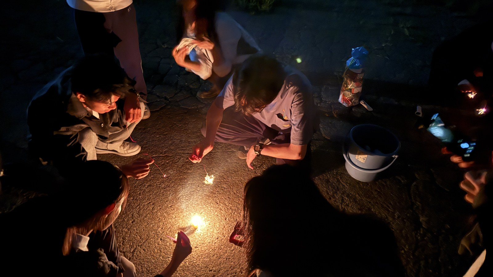
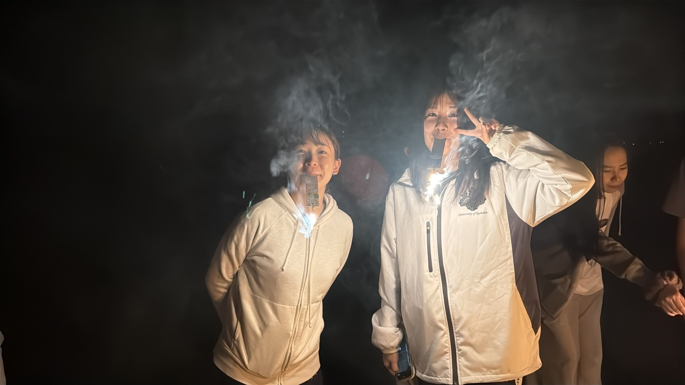
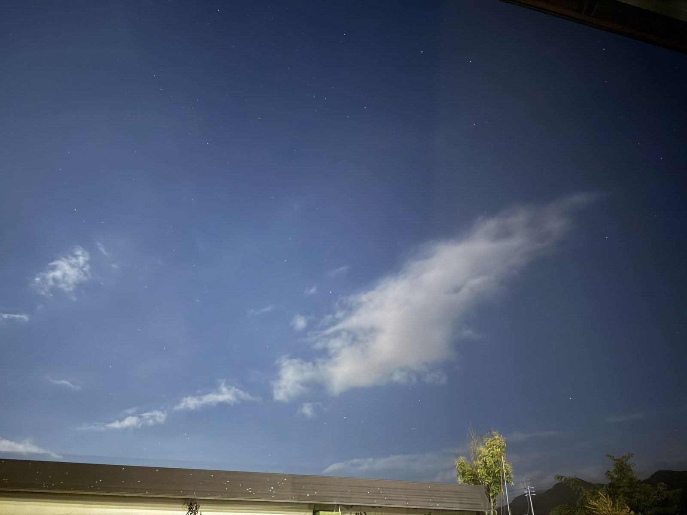
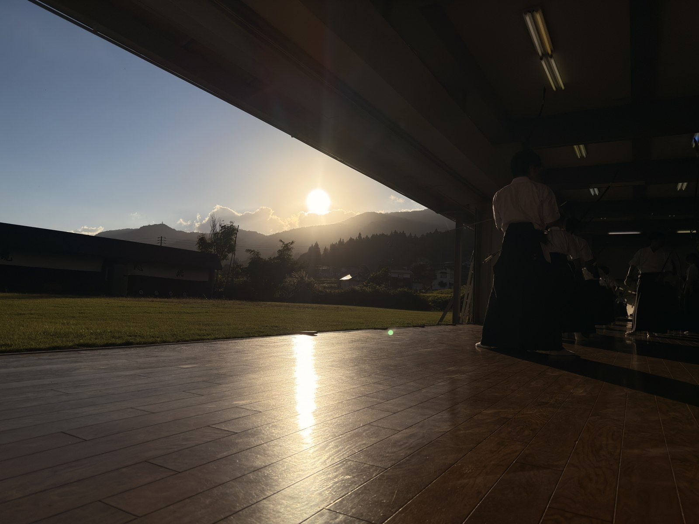
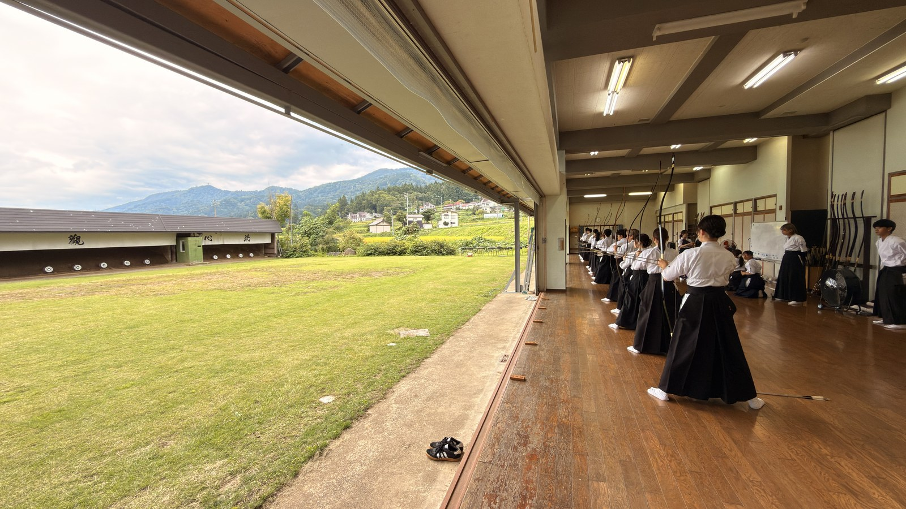
田舎留学
2026年9月 — 田舎留学で出会った人たちと、滞在中の風景を写真で振り返ります。
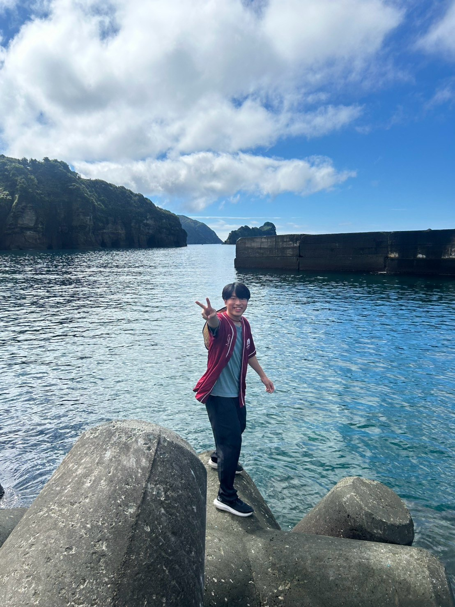
詳細・写真を見る（8枚）
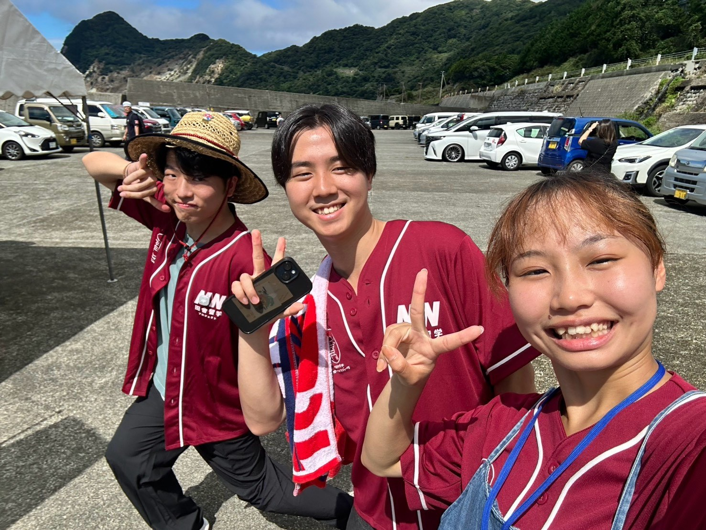
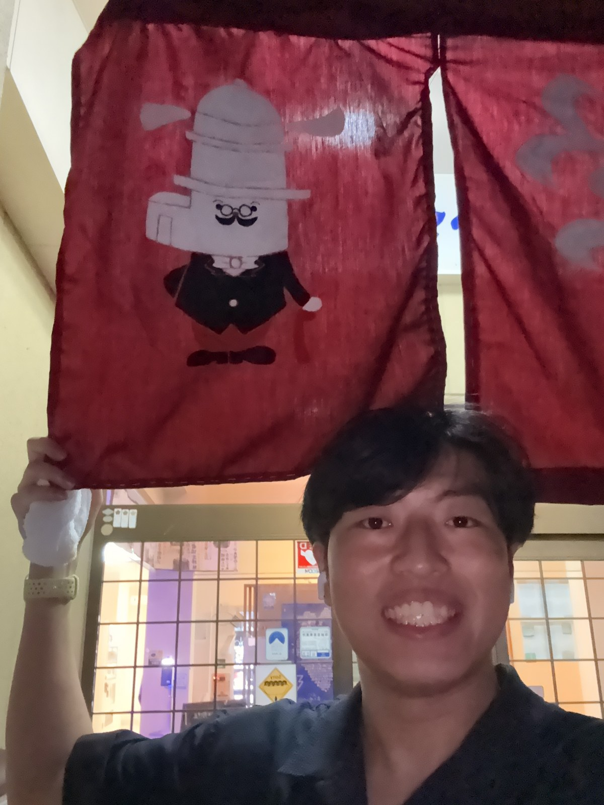
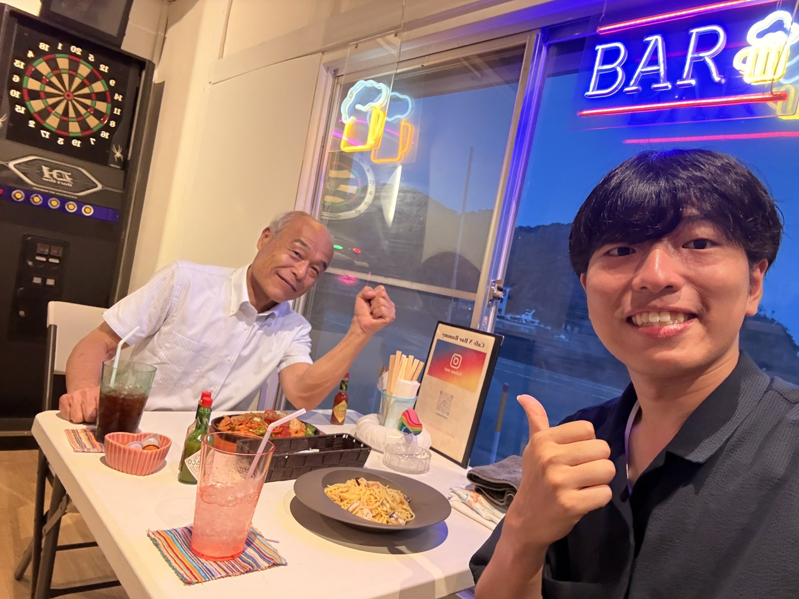
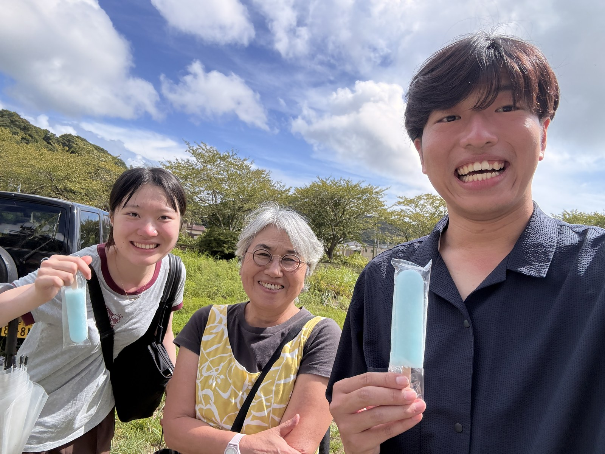
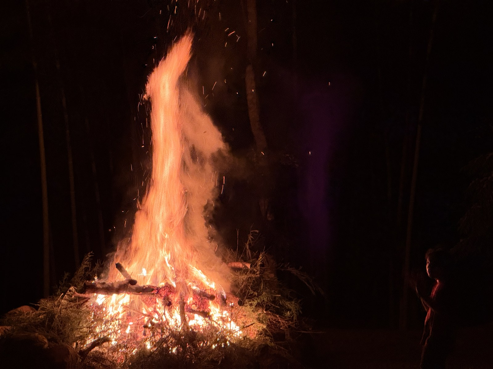
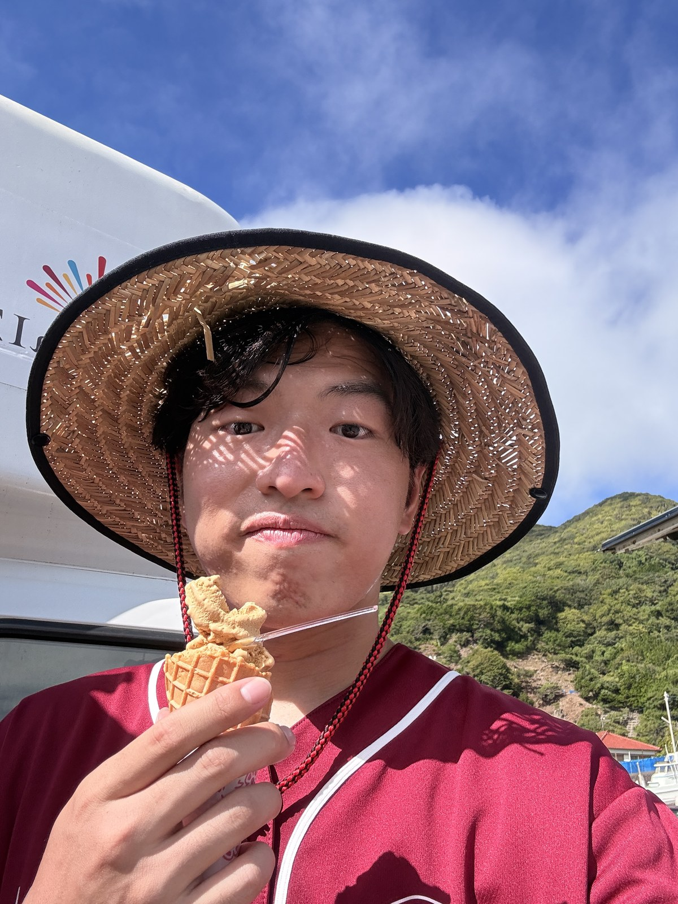
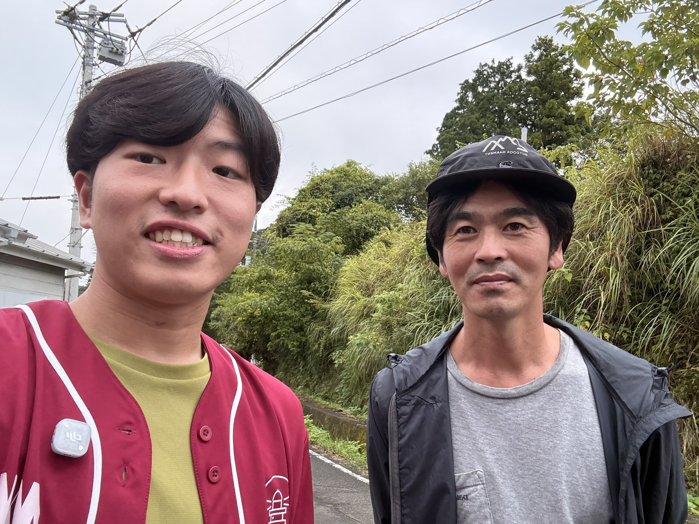
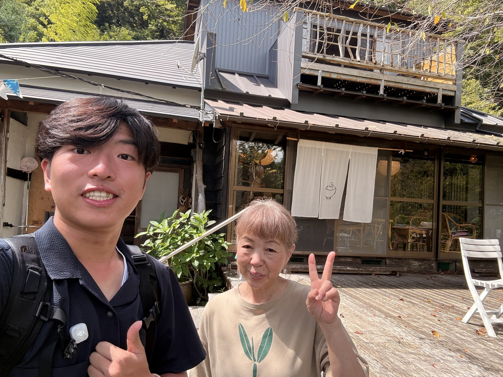
開催をやり遂げた実感
準備してきたハッカソンが終わり、ほっとしています。いろいろな出来事があった9月ですが、自分たちでイベントを開催できたことは、特に大きな経験として残りました。
協力と、周囲からの反応
先生がとても協力的で、友人たちからも開催を認めてもらえたように感じました。自分がやろうとしていたことを、実際に形にして終えられた。その姿が周囲にも伝わったのがうれしかったです。
振り返ると、達成感の中には、自分が動いたことだけでなく、協力してくれた人の存在や、終わった後にもらった反応が含まれています。
この経験から、次を考える
9月のまとめとしては、まず無事に開催できたことを大切に記録しておきたいと思います。今は、その先をどう展開させていくかを考え始めています。
次の形を作るには、一緒に動く仲間と、集まる目的が必要です。開催できたという実感を持ちながら、これからの活動を考えていきたいです。
- ハッカソンを終えた実感を、9月の記録として残す。
- 次の展開に向けて、一緒に活動する仲間と目的を考える。